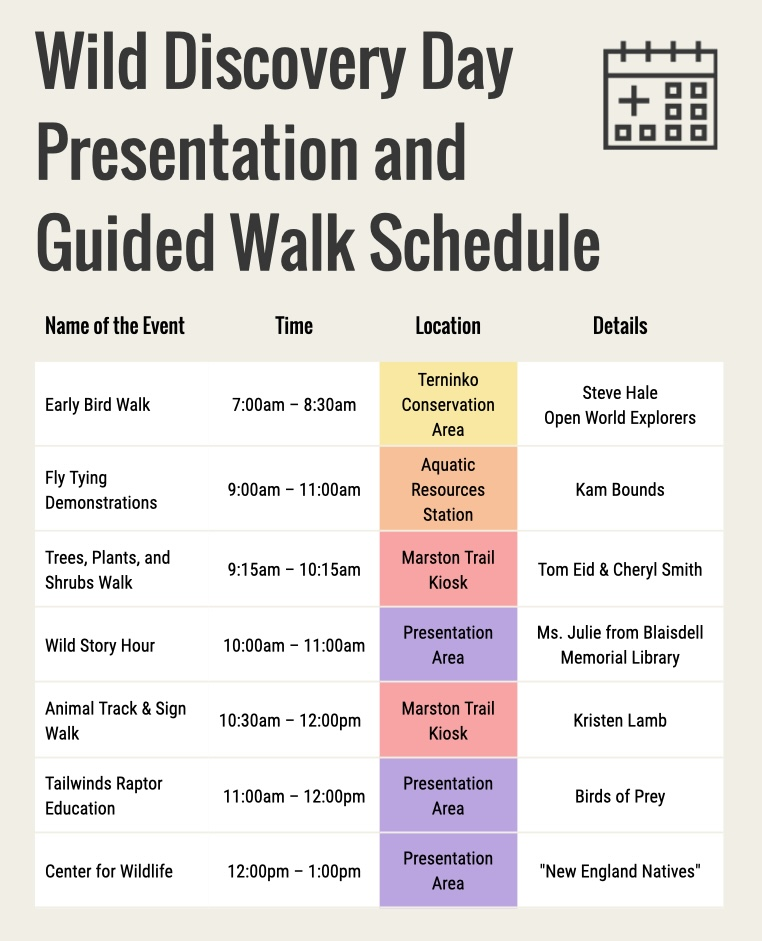

Schedule of Activities
Join us for a day filled with exciting nature exploration activities!
-
BioBlitz & Exploration Stations
Time: 9:00 AM — 1:00 PM | Location: Marston Farm Recreation Area
Join us at the Marston Farm Recreation Area for a day of hands-on nature exploration and self-guided discovery! Want to learn more about what a BioBlitz is? Click here!
Register to Let Us Know You're Coming! Click Here to Register
-
Guided Walk: Birding with Steve Hale
Time: 7:00 AM — 8:30 AM | Location: Terninko Conservation Area
Leader: Steve Hale, Open World Explorers | Capacity: 15
Open World Explorers provides birdwatching trips and classes, nature tours, and interactive presentations from Greater Boston to Northern New England.
>> Registration is Required for this Walk: Click Here to Sign Up
-
Guided Walk: Trees, Plants, and Shrubs
Time: 9:15 AM — 10:15 AM | Location: Marston Farm Trail Kiosk
Leader: Tom Eid & Cheryl Smith | Capacity: 15
Learn about plants, trees, woody shrubs, and the invasive pests, pathogens, and diseases that affect them from local naturalist and Nottingham Trails Committee co-chair Tom Eid and Nottingham Conservation Commission member Cheryl Smith.
>> Registration is Required for this Walk: Click Here to Sign Up
-
Guided Walk: Animal Track & Sign
Time: 10:30 AM — 12:00 PM | Location: Marston Farm Trail Kiosk
Leader: Kristen Lamb | Capacity: 15
Join certified tracker Kristen Lamb, member of the Nottingham Conservation Commission and Executive Director of the Center for Wildlife, for a guided walk looking at various wildlife tracks and signs.
>> Registration is Required for this Walk: Click Here to Sign Up
-
Demonstration: Fly Tying
Time: 9:00 AM — 11:00 AM | Location: Aquatic Ecology Station
Leader: Kam Bounds | Capacity: 30
Learn the art of fly tying from experienced angler and fly tying artist Kam Bounds.
-
Presentation: Wild Story Hour
Time: 10:00 AM — 11:00 AM | Location: Wild Discovery Presentation Area
Leader: Blaisdell Memorial Library | Capacity: 20
Join Ms. Julie of the Blaisdell Memorial Library for a delightful outdoor story time.
-
Presentation: Birds of Prey
Time: 11:00 AM — 12:00 PM | Location: Wild Discovery Presentation Area
Leader: Tailwinds Raptor Education and Conservation | Capacity: 30
Learn about raptors and their conservation from experts at Tailwinds.
-
Presentation: New England Natives
Time: 12:00 PM — 1:00 PM | Location: Wild Discovery Presentation Area
Leader: The Center for Wildlife | Capacity: 30
Learn about the native species of New England and their ecological roles from experts at The Center for Wildlife.
>> Lunch will be available for purchase from the Friends of Nottingham Parks & Recreation <<
Click the image below to download a PDF version of the schedule of activities for the Nottingham Community BioBlitz & Wild Discovery Day 2026.
